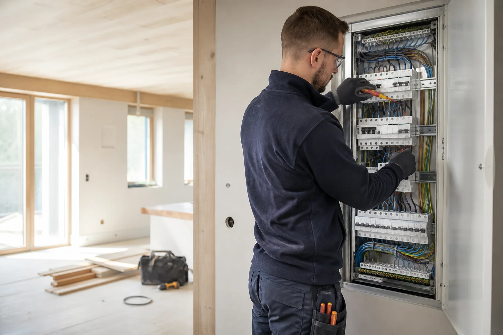
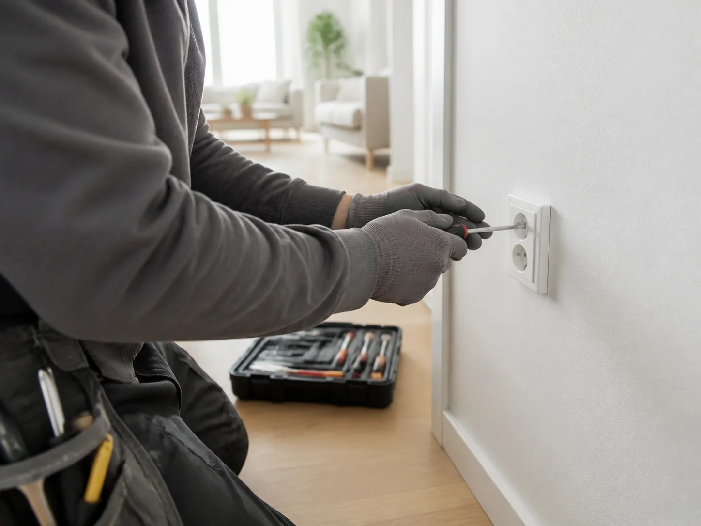
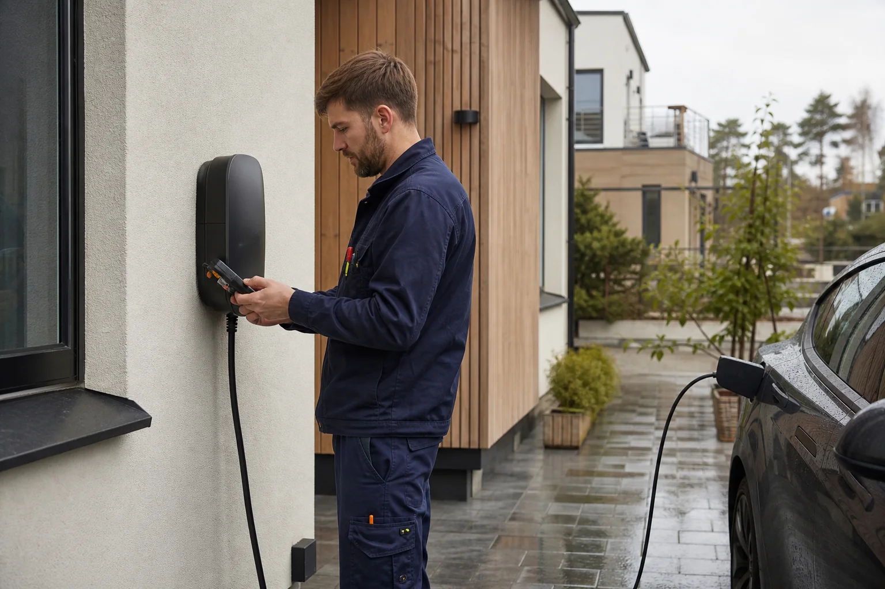

Elinstallationer
Nya uttag, strömbrytare och eldragning vid renovering, ombyggnad eller komplettering.
Fråga om installationLokal elservice i Saltsjöbaden
Personlig hjälp med elinstallationer, felsökning och modernisering för hem och fastigheter i Saltsjöbaden och Nacka.
Saltsjöbaden · Nacka med omnejd

Elhjälp utan omvägar
Vi hjälper dig att hitta en säker och praktisk lösning som passar bostaden, fastigheten och hur elen faktiskt används.
Nya uttag, strömbrytare och eldragning vid renovering, ombyggnad eller komplettering.
Fråga om installationNär säkringen löser ut, ett uttag slutar fungera eller elanläggningen behöver kontrolleras.
Översyn och modernisering av elcentraler för en tydligare och tryggare elanläggning.
Planering och installation av funktionell belysning inne, ute och i gemensamma utrymmen.
Förberedelse och installation av laddlösningar för villa, parkering och mindre fastighet.
Ring och beskriv problemet. Vi börjar med att reda ut nästa rimliga steg.
Ring oss
Lokalt hantverk
Bra elarbete märks i vardagen: rätt placerade uttag, belysning som fungerar och en anläggning du kan känna dig trygg med.
Elektroarbeten i Saltsjöbaden är ett lokalt företag med rötter tillbaka till 1953. Vårt fokus är tydlig kontakt, noggrant utförande och lösningar som håller över tid.
Så går det till
Ring och beskriv jobbet, problemet eller planerna för din renovering.
Vi går igenom förutsättningarna och kommer överens om nästa steg.
Installationen genomförs med fokus på säkerhet, ordning och funktion.
Vi kontrollerar resultatet och går igenom det du behöver känna till.
Smartare hemma
En laddbox eller moderniserad elanläggning kan göra hemmet både enklare och bättre förberett för framtiden. Vi hjälper dig att tänka igenom placering, kapacitet och installation.
Prata laddlösning
Din lokala elektriker
När du söker en elektriker i Saltsjöbaden är närhet, tydlig kontakt och lokal kännedom värdefullt.
Vi hjälper kunder i Saltsjöbaden, Nacka och närliggande områden med elservice, installationer och förbättringar i befintliga elanläggningar. Oavsett om det gäller ett enstaka uttag, ny belysning eller ett större renoveringsprojekt börjar vi med att förstå behovet.
Behöver du hjälp snabbt eller vill du planera ett kommande elarbete? Ring oss och berätta vad du vill få gjort.
Kontakta en lokal elektrikerVanliga frågor
Exempel är elservice, felsökning, uttag, belysning, elcentraler och förberedelse för laddbox. Ring gärna så kan vi bedöma just ditt behov.
Vi utgår från Saltsjöbaden och tar uppdrag i Nacka med omnejd. Kontakta oss för att stämma av plats och omfattning.
Ja. Det är klokt att planera uttag, belysning och belastning tidigt. Då blir lösningen bättre integrerad i projektet.
Beskriv vad som ska göras, var arbetet finns och när du önskar hjälp. Bilder kan också göra det lättare att bedöma nästa steg.
Kontakta oss
Berätta kort om elarbetet så tar vi nästa steg därifrån.